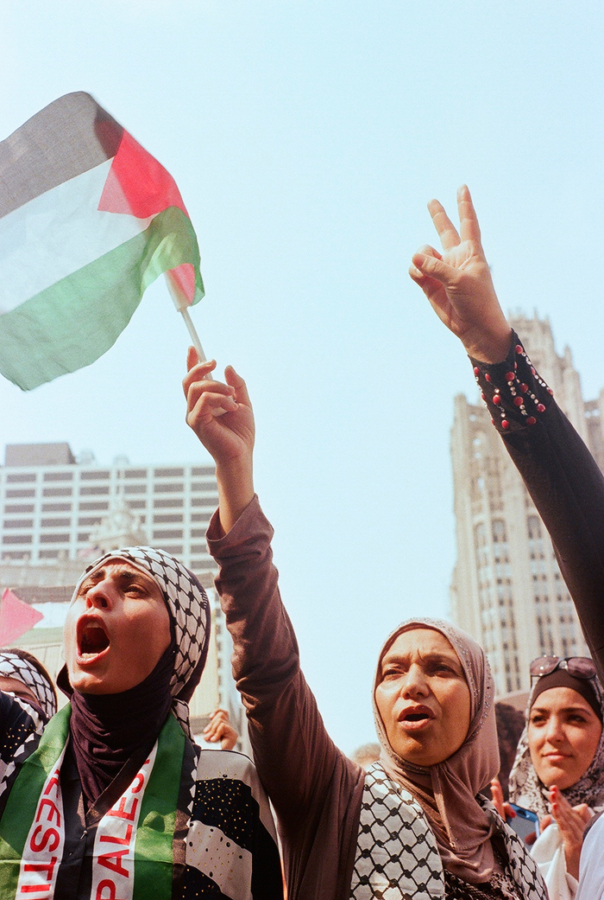
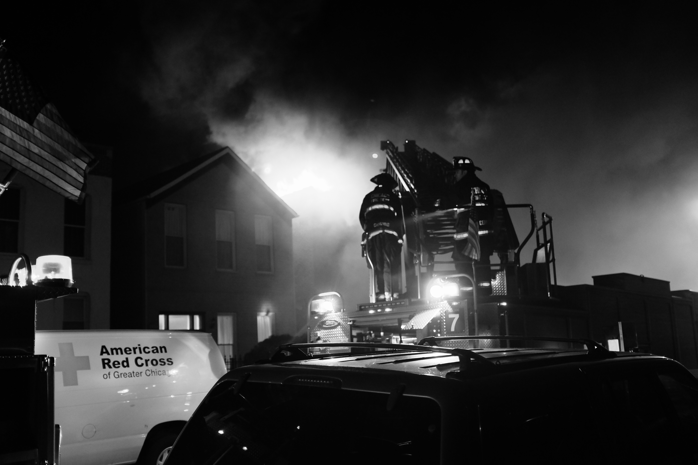
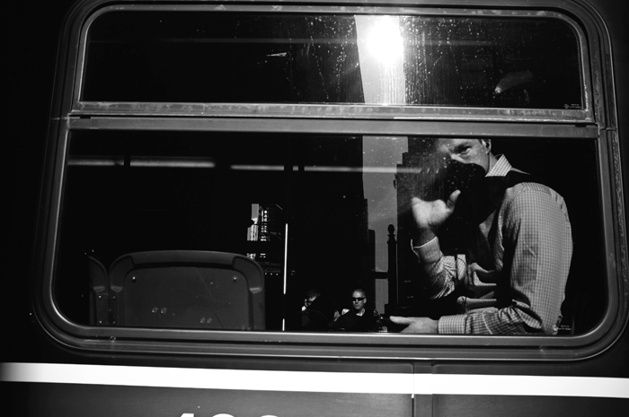

Sebastian Hidalgo's Stolen Photography
Sebastian Hidalgo steals and captures moments like a thief behind the lens under the guise of Stolen Photography. Although Hidalgo primarily focuses on documentary photography and portraiture, he does not consider himself a storyteller, but seeks to create an iconic image as a representation of the times and experiences he encounters. This is made even more apparent in his use of film photography over his digital photos. There is a certain permanence and stillness to his pictures that can only come with shooting film.
Hidalgo finds that through shooting photography he is able to capture both the beauty and the cruelty that we encounter in the world, almost simultaneously. In some of the photos he has chosen below, he was able to single out the grace of the stare from a woman in the midst of pain and trauma at the GAZA protest in 2014. The photo won him an award and accolades for such a powerful image. This is just an example of the journey he has taken not only in his work, but also in capturing and juxtaposing both the light and dark aspects within his own life.
 |
 |
|
| Teeth | Untitled | |
This is what Chicago’s punk shows in Pilsen are made up of. Contently misjudged and misunderstood. These boys and gals just want to have a good time.
|
|
|
|  |  |
|
| A Cry | Too Serious | |
This photograph was taken in 2014 at the Chicago for GAZA protest. People came on busses, trains, and in some cases, walked long distances, to show their support for what was happening in the Gaza Strip at the time. The environment was empowering and motivated me to produce my best work. It is titled A Cry, because I felt the anger, the emotion, and the cry of a people.
|
|
|
|  |  | |
| Our Boys in Boots | Untitled | |
A intense fight for the fire department as they battle a fire the engulfed an apartment building on Fillmore and Western. Hard to breathe and blinded by the black smoke I managed to get up close to document our boys in boots in action.
|
|
|
For more from Stolen Photography:
Stolen Photography Website
Stolen Photography on Facebook
Stolen Photography on Instagram